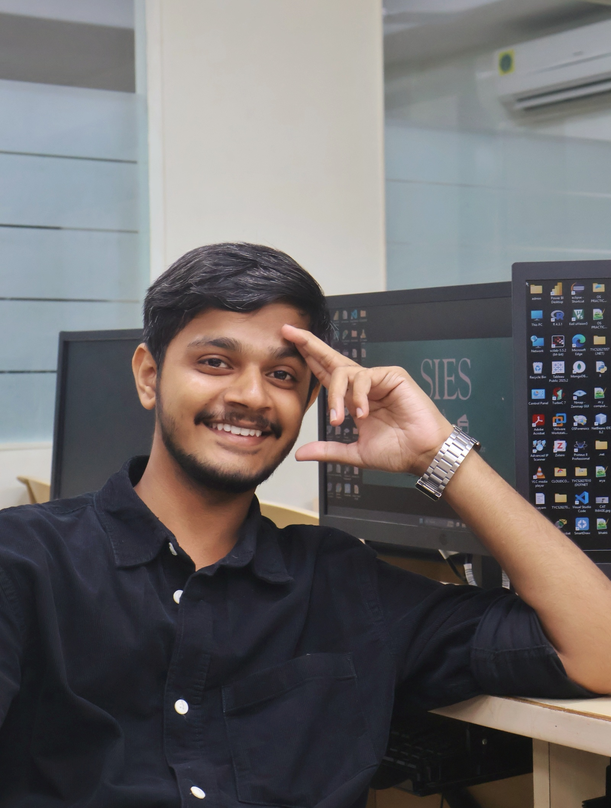

Shivam Bhilare
Learning by building. Exploring emerging tech and turning concepts into real-world projects.
Scroll to exploreAbout Me

Shivam Bhilare
Software developer and Computer Science student passionate about exploring every layer of the development stack. My philosophy is simple: build to understand. Rather than sticking to one niche, I explore everything from backend logic and data flow to dynamic frontends and emerging AI tools. By pairing rapid learning with modern AI-assisted workflows, I can dive into unfamiliar libraries quickly, map out how systems talk to each other, and turn ideas into functional, real-world code.
(Graduating March 2027)
Projects
SmallBook
AI Research & Study Assistant · NotebookLM Alternative
A web project inspired by NotebookLM, built to explore how Retrieval-Augmented Generation (RAG) works on textbooks and study notes. The goal was to build an interface that allows uploading documents, retrieving relevant sections via semantic search, and generating structured study aids like quizzes and flashcards grounded directly in the text.
- Explored text splitting strategies with overlap to make sure concepts, formulas, and definitions retain enough surrounding context for retrieval.
- Integrated Qdrant to understand how semantic embeddings work in practice, retrieving only the relevant chunks of text instead of passing entire files to the LLM
- Connected LiteLLM to experiment with multiple providers (Claude, Gemini, and local models via Ollama) and understand API handling, fallbacks, and rate limits.
FinTune
Personal Finance Optimizer
Built during my first 24-hour hackathon (ZeroDay Hackathon) working in a team. FinTune was an experiment in reducing the friction of expense tracking by extracting costs from voice memos and receipt photos, combined with a gamified challenge system to encourage better saving habits.
- Integrated the Gemini API to parse messy receipt images and voice inputs, focusing on structured output formatting so values reliably mapped into database models.
- Designed a rule-based budget generator and a gamified "side-quest" streak system that rewarded users with XP and scoreboard ranks when staying below set limits.
- Coordinated application flow and backend integration across a 4-person team, learning hands-on how to collaborate on Git branches and stitch different features together in 24 hours.
ExGrowth Analytics
Automated Business Analytics & KPI Dashboard
Built to learn hands-on data manipulation and transformation using Python, Pandas, and NumPy. ExGrowth takes raw, inconsistent sales spreadsheets (CSV/Excel) and converts them into interactive visual dashboards to track performance metrics without manual calculations.
- Explored RapidFuzz to resolve inconsistent column naming and messy customer labels, automatically standardizing fields for database storage.
- Practiced using Pandas and NumPy for aggregations—grouping records by region, product category, and timeframe to compute metrics efficiently.
- Structured an interactive dashboard using Chart.js to render key sales KPIs: Total Revenue, Profit Margins, Average Order Value (AOV), and monthly sales trend charts.
Core Engineering Toolkit
Leadership & Milestones
Vice Chairperson, Ziegers Tech Fest
SIES College of Arts, Science & Commerce · 2026
Coordinated a core team of 27 members and directed 170 student volunteers for the Computer Science department’s annual technology festival. Oversaw operational blueprints, event scheduling, logistics, and inter-team communications across the two-day fest.
Team Leader, ZeroDay Hackathon
Team Nexus · Dec 2025
Led a 4-person team during an intensive 24-hour hackathon sprint. Directed project scope, defined API contracts, and coordinated Git branch integration to deliver a functional multimodal web prototype under tight time constraints.
Certifications & Technical Learning
Foundational Knowledge & Skill Building
- NPTEL: Computer Networks
- NPTEL: The Joy of Computing Using Python
- Anthropic: Claude 101
- Harvard CS50: Introduction to Artificial Intelligence with Python (Coursework)
Moments Constellation
A collection of personal snapshots, hackathon sprints, college memories, and perspectives captured through my camera lens. Hover or click any star to reveal a moment.
Let's build something extraordinary.
I’m always open to talking about software development, AI concepts, creative projects, or discussing internship and junior engineering opportunities.
bhilareshivam0741@gmail.com